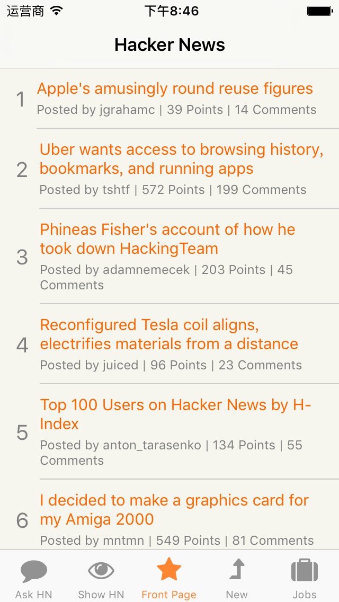

你好Reactive Native
tags:开发随笔
在移动开发领域，Reactive Native恐怕是目前最引人瞩目的项目之一。有很多理由让人不得不关注它，同时支持多个平台，性能接近于原生应用，采用javascript开发，大厂背书，各种理由，总有一个适合你。
虽然我目前专注于iOS开发，以Swift和Objective-C作为主要开发语言，但是还是忍不住开始了Reactive Native的尝试之旅。
毕竟世界总是在变。提前准备一下，说不定下一个项目就用它了 :)
目标
准备ReactNative开发环境
- 运行起一个比较典型的开源Reactive Native应用。这里我选的是 Hacker News
环境
环境准备参考https://facebook.github.io/react-native/docs/getting-started.html
我用的是MacBook，OSX 10.11。
XCode 7.3已经安装。
1. 安装或者更新homebrew
官方推荐用homebrew来安装Watchman和Flow。
我之前已经安装了homebrew。如果没有安装的话，可以参考https://coolestguidesontheplanet.com/installing-homebrew-on-os-x-el-capitan-10-11-package-manager-for-unix-apps/
2. 安装nvm和node.js
在Reactive Native开发过程中，大量使用node.js来实现一些自动处理的工作。所以node.js是必须的。
Reactive Native需要node.js 4.0以上版本。
Facebook推荐用nvm来安装和管理node.js。nvm 可以帮忙管理同一台机器里的多个node.js版本，并且可以在多个版本的node.js中间切换。
可以运行下面的命令来安装nvm
curl -o- https://raw.githubusercontent.com/creationix/nvm/v0.31.0/install.sh | bash
运行完后nvm就安装好了。然后运行下面的命令来安装node.js 5.0:
nvm install 5.0
完毕后nvm会自动将5.0版本设为默认，也可以执行下面的命令手动将5.0设为默认:
nvm use 5.0
3.安装Watchman和Flow
brew install watchman
brew install flow
4.安装ReactNative命令行
执行
sudo npm install -g react-native-cli
我在这里遇到一个错误，提示信息如下:
ERROR EACCES, permission denied '/Users/admin/.babel.json' {"errno":-13,"code":"EACCES","path":"/Users/admin/.babel.json","syscall":"open"} Error: EACCES,
这是文件权限设置的问题，改一下它的权限就好了:
sudo chmod 777 ~/.babel.json
5.下载并运行HackerNews
可以直接在https://github.com/iSimar/HackerNews-React-Native页面中点“Download Zip”按钮。
解压后到文件夹，将终端的当前路径cd到项目路径，然后
npm install
node.js会下载这个工程所需要的模块。
等命令执行完后，找到ios目录下的工程文件HN Reader.xcodeproj，点击就可以使用XCode打开了运行了。
我在这里遇到一个小坑：运行后出现一个错误，信息为
Failed to build DependencyGraph: Watchman error: Cannot read property 'root' of null.
Google之后发现是Watchman版本过低造成的。解决方法
$ brew update $ brew upgrade watchman
解决后HackNews终于可以运行了，贴一张图:
